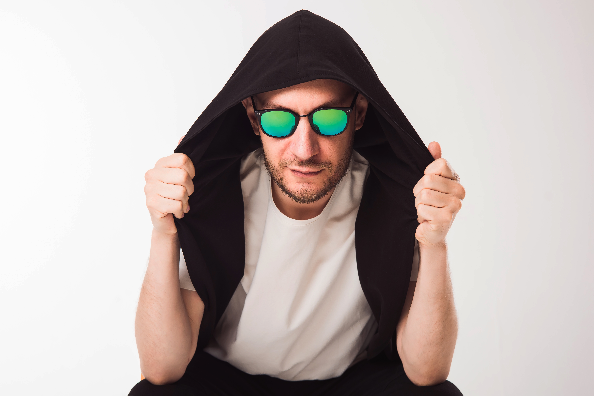
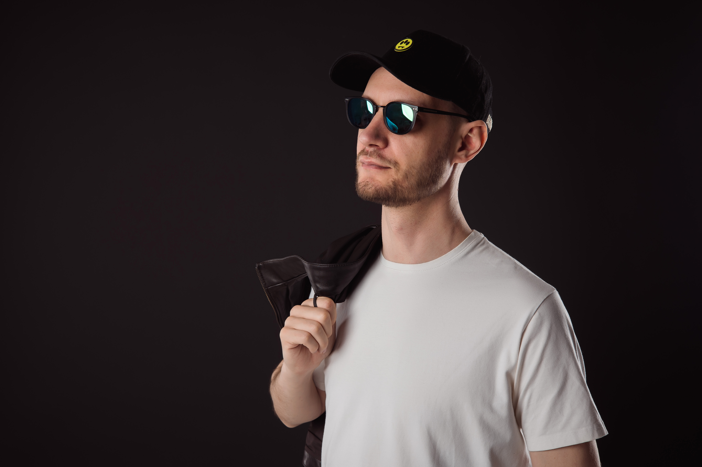

Viktor
Korsky
[ SOUND PRODUCER // DJ // LINEAR RHYTHMS ]


[ SOUND PRODUCER // DJ // LINEAR RHYTHMS ]


Исследование глубокого, сырого грува и передовых звуковых структур. Фокус на плотной аналоговой эстетике, гипнотическом гипно-техно и быстром, бескомпромиссном ритме.